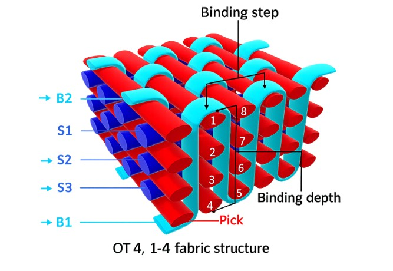
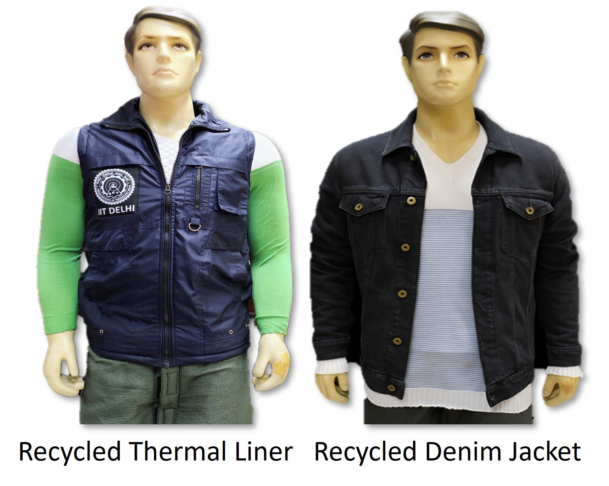
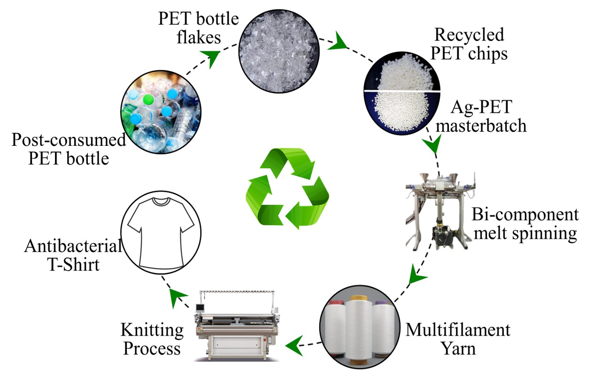
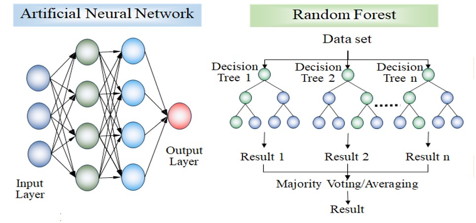

Soft body armour
Lightweight ballistic protection
Lightweight body armour systems using high-performance fibres and hybrid textile architectures to achieve effective ballistic protection with minimal back-face deformation.
Material architecture
- UHMWPE unidirectional (UD) laminates
- Woven p-aramid fabric structures
- Integration of smart fluids for enhanced energy dissipation
System characteristics
- Protection area: 3800 cm² (full torso coverage)
- Total armour weight: 1.8 kg
- Areal density: 4.1 kg·m⁻²
Performance highlights
430 m·s⁻¹Stops 9×19mm lead-core projectile at this impact velocity
< 25 mmMaximum back-face deformation
BIS Level 1Ballistic requirement compliance
Stab-resistant armour
Flexible protection against blade and spike threats
Flexible stab-resistant textile armour through synergistic use of high-performance fabrics, ceramic reinforcements, and functional fluids.
Material architecture
- Woven p-aramid and UHMWPE high-performance fabrics
- Boron carbide (B₄C) ceramic particles
- Shear thickening fluid (STF) integration
Key innovations
- Novel ceramic particle coating that preserves fabric flexibility
- Strategic placement of ceramic particles at the strike face
- STF at the rear layers to resist yarn mobility during penetration
- Synergistic interaction between hard and adaptive components
Performance highlights
< 7 mmPenetration depth at 24 J impact energy
4.0 kg·m⁻²Areal density
NIJ 0115.00Level 1 stab-resistance standard met


Focus areas
- Structure–property relations of 3D woven fabric composites
- Optimisation of stuffer-to-binder ratio and binding step
- Development of metal oxide nano-structures on fabrics
- Improvement of mechanical properties by adding multiwalled CNTs
Key takeaways
- 3D woven fabric composites avoid the delamination failures common in laminated composites
- Yarn waviness dominates properties when load is applied along the yarn axis
- Resin distribution inside the structure plays a bigger role in out-of-plane mechanical loading
Alongside high-load-bearing composites, the group also develops green composite materials as alternatives to synthetic materials — using UHMWPE fibres for high performance, and flax and jute for green composites.
450 MPaTensile strength of UHMWPE–epoxy composite
1.05 g·cm⁻³Composite density
Jute + SPIGreen composite with promising mechanical properties
Focus areas
- Valorization of post-consumer textile waste
- Life cycle assessment (LCA) of circular textiles
- Design of multi-echelon supply chains considering carbon tax policies
- Analysis of barriers to circular textile supply chains

Antibacterial & Moisture Management Polyester Fibre
Focus areas
- Development of antibacterial polyester fibre using silver nanoparticles
- Use of post-consumer PET bottles as the starting material
- Improvement of moisture management through profiled fibre geometry

Focus areas
- Analytic Hierarchy Process (AHP), TOPSIS, and fuzzy variants for material and supplier selection
- Sustainable and resilient supply chain modelling for textile and clothing industries
- Industry 4.0 adoption frameworks for textile manufacturing
- Development of new MCDM algorithms
Focus areas
- Predictive modelling of textile materials using ANN, fuzzy logic, and decision trees
- Optimization of input parameters using genetic algorithms and NSGA II
- Development of new MCDM algorithms
- Applications in yarn and fabric engineering
